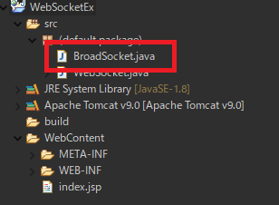
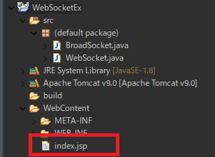
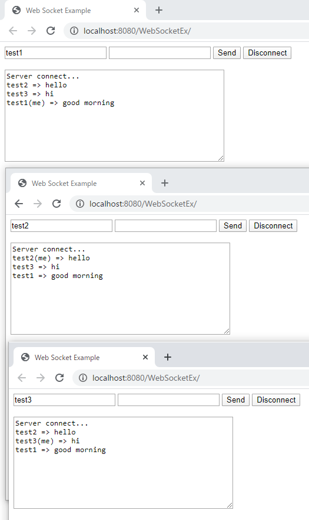
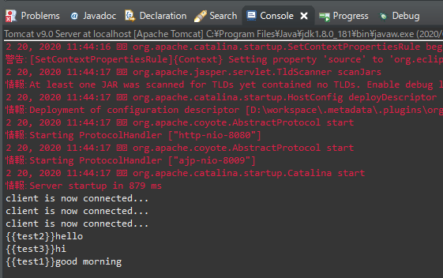

[Java] WebSocketでWeb Sessionを使う方法(Broadcast)とウェブチャットの例
こんにちは。明月です。
この投稿はWebSocketでWeb Sessionを使う方法(Broadcast)とウェブチャットの例に関する説明です。
以前の投稿でWebSocketを設定してブラウザから接続、メッセージを送信、受信、切断まで説明したことがあります。
link - [Java] WebSocket (ウェブソケット)
CSプログラムでソケット通信すると思えば、サーバソケットで接続するとクライアントソケットを受け取ってリストで管理します。
それでサーバからクライアントに一括送信するものがあればリストからクライアントコネクションを受け取って繰り返してメッセージを送信します。
WebSocketにはSessionというリソースがあります。
このSessionはWebSession(サーバにクライアント別に情報を格納するリソース)とは違います。ただソケットのコネクションのリソースです。CSプログラムだとClientSocketと同じ意味のインスタンスです。
import java.io.IOException;
import java.util.ArrayList;
import java.util.Collections;
import java.util.List;
import java.util.regex.Matcher;
import java.util.regex.Pattern;
import javax.websocket.OnClose;
import javax.websocket.OnMessage;
import javax.websocket.OnOpen;
import javax.websocket.Session;
import javax.websocket.server.ServerEndpoint;
// WebSocketのホストアドレス設定
@ServerEndpoint("/broadsocket")
public class BroadSocket {
// 接続したクライアントセッションを管理するリスト
private static List<Session> sessionUsers = Collections.synchronizedList(new ArrayList<>());
// メッセージからユーザ名を取得するような正規表現パターン
private static Pattern pattern = Pattern.compile("^\\{\\{.*?\\}\\}");
// WebSocket serverにブラウザ(client)が接続すれば呼ばれる関数。
@OnOpen
public void handleOpen(Session userSession) {
// クライアントが接続すればクライアントセッションリストにWebSocketセッションを格納する。
sessionUsers.add(userSession);
// コンソールにメッセージを出力する。
System.out.println("client is now connected...");
}
// WebSocket serverにブラウザ(client)がメッセージを転送すれば呼ばれる関数。
@OnMessage
public void handleMessage(String message, Session userSession) throws IOException {
// コンソールに受け取ったメッセージを出力する。
System.out.println(message);
// 初期ユーザ名
String name = "anonymous";
// メッセージから送信したユーザ名を取得する。
Matcher matcher = pattern.matcher(message);
// メッセージ例 : {{ユーザ名}} メッセージ
if (matcher.find()) {
name = matcher.group();
}
// closureのため、変数を常数に設定
final String msg = message.replaceAll(pattern.pattern(), "");
final String username = name.replaceFirst("^\\{\\{", "").replaceFirst("\\}\\}$", "");
// クライアントセッションリストからセッションを繰り返して取得する。
sessionUsers.forEach(session -> {
// 取得したセッションとメッセージを送ったセッションは同じなら返事しない。
if (session == userSession) {
return;
}
try {
// すべてのセッションにメッセージを転送する。 (形式: ユーザ名 => メッセージ)
session.getBasicRemote().sendText(username + " => " + msg);
} catch (IOException e) {
// エラーが発生するとコンソールに出力する。
e.printStackTrace();
}
});
}
// WebSocket serverにブラウザ(client)が切断すれば呼ばれる関数。
@OnClose
public void handleClose(Session userSession) {
// セッションリストから切断されたセッションを抜く。
sessionUsers.remove(userSession);
// コンソールにメッセージを出力する。
System.out.println("client is now disconnected...");
}
}

基本的に以前WebSocketに説明した構造と同じです。今回は各リスナーからパラメータを「Session」を受け取ります。
「Session」データはソケット通信だと「Socket」クラスと同じです。サーバとクライアント(ブラウザ)間にコネクション情報があります。
messageを受け取る時に呼ばれる関数でメッセージを分析する流れがあります。
私が各セッションの区分のため、メッセージを「{{ユーザ名}}メッセージ」の形式でサーバにメッセージを送りました。それをユーザ名とメッセージ内容を分離する作業です。
セッションリストからセッションを受け取ってメッセージを送る時にメッセージを送ったセッションは抜いてメッセージを転送します。
<%@ page language="java" contentType="text/html; charset=UTF-8" pageEncoding="UTF-8"%>
<!DOCTYPE html>
<html>
<head>
<title>Web Socket Example</title>
</head>
<body>
<form>
<!-- ユーザ名を入力するテキストボックス(基本値は anonymous(匿名)だ。) -->
<input id="user" type="text" value="anonymous">
<!-- 送信メッセージを作成するテキストボックス -->
<input id="textMessage" type="text">
<!-- メッセージを送信するボタン -->
<input onclick="sendMessage()" value="Send" type="button">
<!-- WebSocket終了(切断)するボタン -->
<input onclick="disconnect()" value="Disconnect" type="button">
</form>
<br />
<!-- コンソール役をするテキストアリア、受信メッセージも表示する。 -->
<textarea id="messageTextArea" rows="10" cols="50"></textarea>
<script type="text/javascript">
// 「WebSocketEx」はプロジェクト名
// 「broadsocket」ホスト名
// WebSocketオブジェクト生成(接続開始)
var webSocket = new WebSocket("ws://localhost:8080/WebSocketEx/broadsocket");
// コンソールのテキストアリア
var messageTextArea = document.getElementById("messageTextArea");
// WebSocketが接続成功になれば呼ばれる関数。
webSocket.onopen = function(message) {
// コンソールにメッセージ出力
messageTextArea.value += "Server connect...\n";
};
// WebSocketが切断なれば呼ばれる関数。
webSocket.onclose = function(message) {
// コンソールにメッセージ出力
messageTextArea.value += "Server Disconnect...\n";
};
// WebSocketからエラーが発生する時に呼ばれる関数。
webSocket.onerror = function(message) {
// コンソールにメッセージ出力
messageTextArea.value += "error...\n";
};
// WebSocketからメッセージを受け取ったら呼ばれる関数。
webSocket.onmessage = function(message) {
// コンソールにメッセージ出力
messageTextArea.value += message.data + "\n";
};
// Sendボタンを押下すると呼ばれる関数。
function sendMessage() {
// ユーザ名のテキストボックスのオブジェクト取得
var user = document.getElementById("user");
// 送信メッセージを作成するテキストボックスのオブジェクト取得。
var message = document.getElementById("textMessage");
// コンソールのテキストボックスに転送するメッセージを出力する。
messageTextArea.value += user.value + "(me) => " + message.value + "\n";
// WebSocketサーバにメッセージを転送する。(形式 「{{ユーザ名}}メッセージ」)
webSocket.send("{{" + user.value + "}}" + message.value);
// 送信メッセージを作成するテクストボックスを初期化する。
message.value = "";
}
// Disconnectボタンを押下すると呼ばれる関数。
function disconnect() {
// WebSocket切断
webSocket.close();
}
</script>
</body>
</html>

WebSocketサーバにメッセージを転送する時に形式を「{{ユーザ名}}メッセージ」形で組み立てして送りました。 それをサーバ側からユーザ名とメッセージ内容を分離して区分することです。
これから起動しましょう。

起動した後、私が各３つのブラウザを開いて接続しました。ユーザ名は各「test1」、「test2」、「test3」で決めてメッセージを送りました。
「test1」から送ったメッセージが「test2」、「test3」にも見えます。このようにウェブチャットプログラムが実装されました。

サーバ側のコンソールログはクライアント３つが接続して各メッセージを送ったことを確認できます。
ここまでWebSocketでWeb Sessionを使う方法(Broadcast)とウェブチャットの例に関する説明でした。
ご不明なところや間違いところがあればコメントしてください。
- [Java] Jsonタイプのデータを使う方法(Gsonライブラリ)2020/03/11 00:30:15
- [Java] Base64をエンコード、デコードする方法2020/03/09 10:24:01
- [Java] cmdコマンドを実行するための方法2020/03/06 18:01:10
- [Java] メール(javax.mail)を発送する方法2020/03/05 20:07:49
- [Java] クラス複製(Clonable, Reflection)2020/03/05 00:03:19
- [Java] シリアライズ(直列化: Serializable)2020/03/03 00:03:33
- [Java] StringBuilderとStringBufferの差異2020/03/02 07:52:22
- [Java] Compare関数を使う方法2020/02/29 03:00:00
- [Java] 数字フォーマット(お金表示及び小数点以下表示)2020/02/28 03:00:00
- [Java] サーブレット環境で現在の実行ディレクトリを取得する方法2020/02/27 03:00:00
- [Java] 日本語をユニコードに変換して、ユニコードから日本語に変換する方法2020/02/26 03:00:00
- [Java] コンソールからデータを受け取る方法(System.in)2020/02/25 03:00:00
- [Java] Servlet環境でWebSocket通信中、HttpSessionを取得する方法2020/02/24 07:47:20
- [Java] WebSocketでWeb Sessionを使う方法(Broadcast)とウェブチャットの例2020/02/22 03:00:00
- [Java] WebSocket (ウェブソケット)2020/02/21 03:00:00
- [Java] 55. Spring frameworkに文字化けを解決する方法(Encoding設定)2021/06/30 16:37:16
- [Java] 54. Spring frameworkでWeb filterを使う方法2021/06/29 18:25:12
- [Java] 53. ウェブサービス(Web service)でエラーページを処理する方法2021/06/25 13:35:54
- [Design pattern] 1-3. ファクトリメソッドパターン(Factory method pattern)2021/06/23 19:45:37
- [Java] WebSocketでチャット履歴をローディングする方法2021/06/15 18:34:45
- [Java] WebSocketを利用してユーザ(サイト運用者)が他のユーザとチャットする方法2021/06/15 17:20:08
- [Design pattern] 1-2. ビルダーパターン(Builder pattern)2021/06/11 19:06:28
- [Design pattern] 1-1. シングルトンパターン(Singleton pattern)2021/06/09 19:40:05
- [Design Pattern] デザインパターンの紹介2021/06/08 20:42:36
- [Tools] Dbeaver(無料Sql queryブラウザツール)2021/04/28 18:26:49
- [Bootstrap] HTMLデザインのフレームワークのBootstrap紹介2020/07/30 19:06:36
- [Python] メール(smtplib)を送信する方法2020/07/27 18:38:43
- [Python] HttpConnection(requestsモジュール)でウェブサーバーで接続する方法2020/07/20 14:41:51
- [Python] Excel(openpyxl)を扱う方法2020/07/16 16:40:31
- [Python] ファイル圧縮、解凍(zipfile)する方法2020/07/14 19:14:22